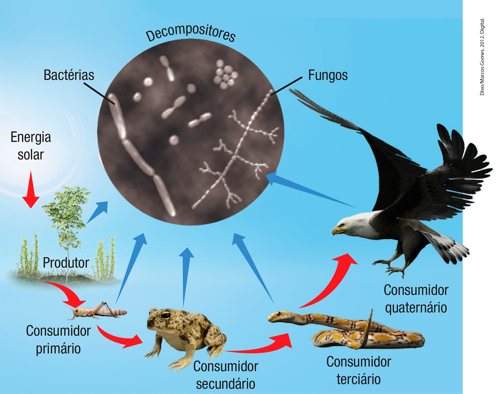
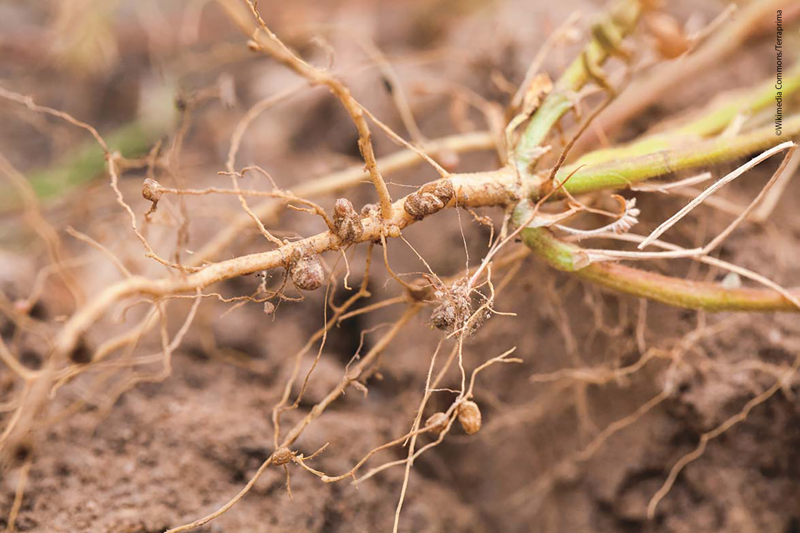

De acordo com o físico e escritor Fritjof Capra, todas as formas de vida estão em conexão. Esse sistema, extremamente complexo, é chamado por ele de “teia da vida”.
1. Em que o termo usado por Fritjof Capra se assemelha à imagem acima?
2. Se puxarmos um fio da teia de aranha, o que acontece com os demais?
3. Considerando que todas as formas de vida estão em conexão como uma teia, o que aconteceria se uma espécie desaparecesse?
Objetivos da unidade
Caracterizar cadeias e teias alimentares.
Reconhecer o fluxo de matéria e energia nos ecossistemas.
Reconhecer o ar como uma mistura de gases que pode ser afetada por fenômenos naturais e antrópicos.
Compreender a importância da água e o fato de ela ser um recurso limitado que precisa ser preservado.
Descrever o ciclo da água.
Relacionar a água à saúde.
Cadeias e teias alimentares
Assim como os fios de uma teia de aranha, os seres vivos também estão em conexão e estabelecem uma relação de dependência entre si. Uma dessas relações é a alimentação. A forma mais simples de demonstrar a relação alimentar entre uma
comunidade é chamada de cadeia-alimentar, que é uma sequência de seres vivos, uns servindo de alimento a outros, sucessivamente. Observe, no esquema a seguir, que a capivara se alimenta das plantas, e a onça-pintada se
alimenta da capivara.
Todos os seres vivos necessitam de energia para realizar as mais variadas atividades. Com a energia da luz solar, a água e o gás carbônico, as plantas e algas produzem a glicose, um tipo de açúcar que constitui o seu próprio alimento.
Durante esse processo, chamado de fotossíntese, o oxigênio também é liberado no ambiente, conforme representado pela reação química simplificada a seguir.
A fotossíntese pode ser definida como o processo pelo qual a planta produz seu próprio alimento utilizando a energia da luz.
Os animais, por sua vez, necessitam ingerir alimentos já prontos, pois não conseguem produzir seu próprio alimento. Assim, eles se alimentam de plantas e outros seres vivos para obter os nutrientes necessários ao seu desenvolvimento.
De acordo com a posição que ocupam na cadeia alimentar, os seres vivos podem ser classificados em produtores, consumidores e decompositores.
Produtores
Os produtores geram seu próprio alimento por meio da fotossíntese. Devido à sua importância, são considerados a base das cadeias e das teias alimentares. Os principais produtores são as plantas e as algas. Por terem a capacidade de
produzirem seu próprio alimento, esses organismos são chamados de seres autótrofos.
Consumidores
Os consumidores necessitam de outros organismos para obter energia por não produzir o próprio alimento, por isso são chamados de heterótrofos.
Os consumidores podem ocupar diversas posições na cadeia alimentar. Os consumidores primários são os animais que se alimentam de organismos produtores, em geral, de plantas ou algas. Os animais herbívoros, como a capivara, o coelho, o
cavalo, a vaca e a maioria dos insetos, são exemplos de consumidores primários. Os consumidores secundários, na maioria das vezes, se alimentam de consumidores primários e, geralmente, são representados por animais carnívoros. É o caso
do tubarão que come um peixe que se alimentou de algas; o sapo que se alimenta de um grilo que comeu uma planta ou de uma serpente que se alimenta de um rato que comeu sementes. Dependendo do tamanho da cadeia alimentar, podem existir
consumidores terciários, quaternários e assim por diante.
A nossa alimentação é bastante variada. Em decorrência disso, podemos ocupar diferentes lugares em uma cadeia alimentar. Por exemplo: quando comemos um prato de arroz com feijão, ocupamos o papel de consumidor primário. No entanto,
quando nos alimentamos de um pedaço de carne de gado, somos consumidores secundários, pois o gado, que come o capim, ocupa o lugar de consumidor primário. Assim como os seres humanos, muitos outros animais também têm alimentação
variada e ocupam diferentes papéis em várias cadeias alimentares. Os animais que se alimentam de vegetais e animais são chamados de onívoros.
Decompositores
Nas cadeias alimentares, além dos vegetais e animais, há os decompositores, representados por fungos e bactérias, que se alimentam de outros seres. Por exemplo, se um animal morre no chão de uma floresta, seu cadáver vai servir de
alimento para os decompositores. Estes, por sua vez, devolvem ao solo sais minerais que estarão disponíveis para serem utilizados pelas plantas. Os decompositores atuam em todos os seres vivos da cadeia alimentar.
Observe um exemplo de cadeia alimentar:

Exemplo de uma cadeia alimentar
Na cadeia alimentar acima:
as plantas fazem fotossíntese – usam energia luminosa, gás carbônico e água para produzir seu alimento;
o alimento produzido servirá para a própria planta e para algum animal que dela se alimente, como o gafanhoto;
o gafanhoto, por sua vez, servirá de alimento para o sapo, que obterá energia ao se alimentar do inseto;
o sapo servirá de alimento à serpente;
a serpente será o alimento da águia;
todos esses seres, quando morrem, servem de alimento aos fungos e às bactérias, que são os decompositores. As substâncias resultantes da decomposição retornam para o solo e podem ser úteis a outros seres, como as plantas que
retiram sais do solo pelas raízes e reiniciam a cadeia alimentar.
Quando um ser vivo serve de alimento ao outro, é transferida a matéria (nutrientes) e a energia de um ser vivo para o outro, por isso a cadeia alimentar também é entendida como uma transferência de matéria e energia. Nas ilustrações,
as setas representam essa transferência.
O fluxo de energia em um ecossistema começa com a luz solar incidindo sobre os produtores e vai diminuindo a cada nível alimentar dos consumidores.
As cadeias alimentares representam o fluxo de energia nos ecossistemas, ou seja, quando um organismo se alimenta de outro, ele obtém energia. O ser vivo usa essa energia para realizar as suas atividades e parte é eliminada em forma de
calor. Assim, cada ser vivo receberá uma quantidade menor de energia que o anterior.
Na natureza, os animais, normalmente, não têm só uma fonte de alimentação. Isso faz com que as cadeias se entrelacem em sistemas mais complexos, chamados de teia alimentar, ou seja, um conjunto de cadeias alimentares
interligadas.
Os organismos que apresentam o mesmo tipo de nutrição constituem um nível trófico ou alimentar. Os produtores ocupam o primeiro nível trófico; os consumidores primários, o segundo nível trófico, e assim sucessivamente.
Observe, na imagem ao lado, um exemplo de teia alimentar.
Exemplo de uma teia alimentar representando variadas possibilidades de alimentação dos seres vivos envolvidos
Saiba +
Uma forma bastante comum de representar o fluxo de energia em uma cadeia alimentar é a pirâmide, conforme a representação ao lado.
Representação esquemática de uma pirâmide de energia
Cada retângulo da pirâmide representa a quantidade de energia disponível para o nível trófico seguinte. Assim, os produtores armazenam a maior quantidade de energia em seu corpo.
Agora, pense no seguinte: por que a energia armazenada no consumidor primário é menor do que a energia que ele adquire se alimentando do produtor?
Organize as ideias
Para que todos os organismos de um ecossistema sejam capazes de receber a quantidade adequada de energia, esta precisa ser distribuída a todos os elos que compõem uma teia alimentar, formando uma corrente, ou sequência, na qual, por
meio da alimentação, todos adquirem certa quantidade de energia.
Analise esta cadeia alimentar e comente o papel que cada ser enumerado desempenha.
Conexões
Em 1962, a escritora americana Rachel Carson lançou o livro intitulado Primavera silenciosa, em que relatou os efeitos do DDT, produto químico usado no controle de insetos que atacam lavouras. Uma das consequências mencionada pela
autora sobre o uso desse pesticida é que ele se acumula e passa de um ser vivo para outro nas cadeias alimentares. Leia um trecho do livro e, depois, responda às questões.
Depois, uma doença estranha das plantas se espalhou pela área toda e tudo começou a mudar. Algum mau-olhado fora atirado àquela comunidade; enfermidades misteriosas varreram os bandos de galinhas; as vacas e os carneiros adoeciam e
morriam. Por toda parte se via uma sombra de morte.
Os lavradores passavam a falar de muita doença em pessoas de suas famílias. Na cidade, os médicos se tinham sentido cada vez mais intrigados por novas espécies de doenças que apareciam em seus pacientes. Registraram-se várias
mortes súbitas e inexplicadas, não somente entre os adultos; mas também entre as crianças; adultos e crianças sentiam males repentinos, enquanto caminhavam ou brincavam, e morriam ao cabo de poucas horas.
Havia ali um estranho silêncio. Os pássaros, por exemplo – para onde é que tinham ido? Muita gente falava deles, confusa e inquieta. Os postos de alimentação, nos quintais, estavam desertos. Os poucos pássaros que por qualquer lado
se vissem estavam moribundos; tremiam violentamente e não podiam voar. Aquela era uma primavera sem vozes.
CARSON, Rachel. Primavera silenciosa. 2. ed. São Paulo: Melhoramentos, 1969. p. 12.
a) “Aquela era uma primavera sem vozes.” Pássaros se alimentam de insetos, que se alimentam das sementes e das folhas da plantação. Represente essa cadeia alimentar e classifique seus componentes.
b) Como o uso do DDT atingiu as cadeias alimentares daquele ecossistema?
c) Com os elementos fornecidos pelo texto, como você justifica a escolha do título do livro?
Atividades
1. Analise a história em quadrinhos sobre uma cadeia alimentar e, na sequência, responda às questões.
b) Qual o elo da cadeia alimentar que não foi representado? Que função realiza no ambiente?
2. Em um ecossistema, as cadeias alimentares se entrelaçam formando uma teia, conforme representado na ilustração a seguir.
Em uma teia, podemos considerar várias cadeias alimentares. No exemplo apresentado, podemos citar:
Planta → coelho → serpente → gavião
Planta → lagarta → sapo → serpente → gavião
Agora, analise a teia apresentada e escreva mais dois exemplos de cadeias que podemos encontrar.
3. Considere a seguinte cadeia alimentar simplificada:
capim → gafanhotos → sapos
Agora, observe a figura ao lado e responda às questões.
a) O que esse gráfico representa? Explique sua resposta.
b) O que são os retângulos e por que eles são representados por barras de diferentes tamanhos?
4. A teia alimentar simplificada, mostrada a seguir, apresenta algumas das inúmeras possibilidades de relações entre diversos tipos de organismos.
Sobre a teia apresentada, assinale V para as alternativas verdadeiras e F para as falsas. Na sequência, converta as alternativas falsas em verdadeiras, registrando-as da maneira corrigida nas linhas
abaixo.
a) ( ) Existe apenas um representante dos organismos produtores.
b) ( ) O tucano pode ser tanto um consumidor primário como um consumidor secundário, dependendo do que estiver se alimentando.
c) ( ) Quando a onça-pintada se alimenta da capivara, ela é considerada um consumidor secundário.
d) ( ) Na teia apresentada, podemos identificar sete organismos que se comportam como consumidores primários.
e) ( ) O jacaré é um consumidor exclusivamente secundário.
5. (OBC) O esquema ao lado representa parte dos organismos que constituem uma comunidade e as inter-relações que os mantêm. Considerando este esquema, qual das seguintes afirmativas está correta?
a) O fitoplâncton e o zooplâncton constituem o nível trófico dos produtores.
b) Gaivotas e biguás são predadores e fazem parte do 4º nível trófico.
c) Peixes e moluscos, por serem onívoros, são considerados consumidores primários.
d) As bactérias e os fungos são os autótrofos decompositores com maior disponibilidade energética.
e) Os moluscos são consumidores primários, tendo à sua disposição uma menor quantidade energética.
fitoplâncton: conjunto de organismos aquáticos microscópicos que realizam fotossíntese (autótrofos) e vivem flutuando na água. Exemplo: algas.
zooplâncton: organismos heterótrofos aquáticos pequenos que habitam as regiões mais superficiais da água e se locomovem principalmente pela ação da correnteza. Exemplo: microcrustáceos e larvas.
Composição do ar e os ciclos naturais
Considerando a conexão dos seres vivos com os fatores abióticos dos ecossistemas, um fator ambiental muito importante para a vida é o ar.
Vista do espaço, a Terra tem uma camada de ar que se apresenta como um manto azulado. Essa camada, chamada de atmosfera, funciona como um filtro que protege nosso planeta de parte das radiações que vêm do espaço e
impede que a maioria dos meteoroides chegue até a superfície terrestre. Entretanto, não é só o nosso planeta que apresenta atmosfera.
Atmosfera terrestre vista do espaço
Apesar de não ser visível, sabemos que o ar se encontra à nossa volta. Podemos percebê-lo quando respiramos, pelo movimento das árvores, pelo vento...
Representação das porcentagens aproximadas dos gases que compõem a atmosfera
O que conhecemos por ar, na verdade, é uma mistura de diversas substâncias, incluindo gases como oxigênio, nitrogênio, ozônio, hidrogênio, gás carbônico, vapor-d’água, etc.
Os gases que fazem parte da composição do ar não são encontrados na mesma quantidade. Analise o gráfico anterior e descubra as proporções desses gases na atmosfera.
Nas camadas mais altas da atmosfera, a composição do ar é bem diferente da existente próximo do solo. Outros gases, como o xenônio e o argônio, podem ser encontrados, e o oxigênio é quase inexistente, sendo inviável
a sobrevivência nessas camadas.
A composição e a proporção de substâncias do ar atmosférico variam de acordo com o local e as outras condições do ambiente. Os seres vivos e os fenômenos naturais estão constantemente interagindo com a atmosfera, seja por meio da
eliminação de gases ou da fumaça vinda de vulcões, seja pela umidade que evapora de rios e oceanos, entre outras interações.
Conexões
Em locais muito altos, como em grandes montanhas, o oxigênio encontra-se em uma concentração menor, é o chamado “ar rarefeito”. Algumas populações que moram em cidades localizadas em grandes altitudes na América do Sul e no
Himalaia estão acostumadas com a pouca oferta de oxigênio no ar e não sofrem seus efeitos mais comuns, como tontura, dores de cabeça, náuseas e cansaço.
Os pilotos militares, que voam em caças a uma altitude entre 9 000 e 12 000 m, utilizam máscaras de oxigênio em suas missões, pois é impossível respirar normalmente quando o ar está tão rarefeito.
La Paz, na Bolívia, está a, aproximadamente, 3 600 metros acima do nível do mar e tem o ar bem rarefeito.
Ciclo do nitrogênio
O nitrogênio é o gás presente em maior quantidade na atmosfera. No entanto, quando respiramos, o nitrogênio entra e sai do nosso organismo quase sem sofrer alteração. Isso ocorre porque não conseguimos assimilá-lo. Então, qual é a
importância do gás nitrogênio para os seres vivos? Ele é fundamental no crescimento de plantas e animais, participando da composição de substâncias essenciais para o desenvolvimento e o crescimento dos seres vivos, como as proteínas.
A maioria dos seres não consegue absorver o nitrogênio na forma gasosa. O nitrogênio do ar somente é absorvido por algumas bactérias por um processo chamado de fixação. Muitas dessas bactérias vivem associadas às
raízes de plantas chamadas leguminosas, como o feijão, a ervilha e a soja. As bactérias fornecem parte do nitrogênio que absorvem para a leguminosa. Os animais, ao se alimentarem dessas plantas, adquirem o nitrogênio. Além de obterem
nitrogênio diretamente pela ingestão das plantas, os animais obtêm nitrogênio quando se alimentam de proteínas de outros animais.
A fixação do nitrogênio atmosférico também pode ocorrer por meio da energia dos raios na atmosfera, gerando substâncias nitrogenadas que são carregadas ao solo pela ação das chuvas e ficam disponíveis para a absorção
das plantas.
Ciclo do nitrogênio na natureza
Todos os seres vivos, depois de mortos, sofrem a ação dos decompositores, e o nitrogênio que formava o seu corpo volta para o solo, onde outros tipos de bactérias devolvem esse gás à atmosfera.
Utiliza-se a letra “N” para representar o elemento químico nitrogênio e N2 para representar o gás nitrogênio.
Saiba +
Você sabe por que os agricultores costumam alternar o plantio de culturas de cana-de-açúcar e milho com culturas de feijão?
O feijão é uma planta leguminosa e abriga bactérias do gênero Rhizobium em suas raízes. Essas bactérias fornecem parte do nitrogênio que absorvem para a planta construir suas proteínas.

Nas raízes das leguminosas, geralmente existem nódulos que abrigam bactérias responsáveis pela absorção de nitrogênio.
Assim, o feijão não necessita de muito nitrogênio do solo. Quando ocorre a colheita do feijão, os restos das plantas são deixados no solo para sofrerem a ação das bactérias decompositoras. O nitrogênio que fazia parte do corpo da
planta agora estará disponível no solo para as plantas que não têm as bactérias em suas raízes, como o milho. Essas técnicas, chamadas de rotação de culturas e adubação verde, reduzem o consumo de fertilizantes industriais na
agricultura.
Ciclo do oxigênio
Os seres vivos obtêm a energia necessária para a manutenção da vida por meio do processo de respiração celular. O gás usado na respiração da maioria dos seres vivos é o gás oxigênio e, por isso, ele é de vital importância.
Você, as plantas, as algas, os animais e tantos outros seres vivos consomem oxigênio. Mas de onde vem o oxigênio presente no ar? Quando você estudou as cadeias alimentares, estudou também a fotossíntese realizada pelas plantas e algas.
Nesse processo, as plantas e algas produzem seu alimento a partir de gás carbônico e água, utilizando a luz solar. Na fotossíntese, o oxigênio é liberado para a atmosfera. Esse gás também participa das reações de
queima, conhecidas como “combustão”.
As algas presentes na superfície dos oceanos produzem mais da metade do oxigênio disponível na atmosfera do nosso planeta. As florestas também contribuem, mas grande parte do oxigênio produzido por elas é consumida
pelas próprias árvores em sua respiração.
Ciclo do oxigênio na natureza
Uma parte do oxigênio também pode ser encontrada na atmosfera, na forma de ozônio, formando a camada de ozônio.
Utiliza-se a letra “O” para representar o elemento químico oxigênio, O2 para representar o gás oxigênio e O3 para o gás ozônio.
Você sabia que sem oxigênio não existe fogo?
É isso mesmo. A combustão só acontece porque o oxigênio (comburente) reage com o combustível, produzindo luz e calor. No processo de combustão, ocorre uma reação química entre o combustível e o oxigênio com produção de energia e
resíduos, na forma de substâncias, como gás carbônico, vapor-d’água, monóxido de carbono, entre outros gases que vão para a atmosfera.
A madeira (combustível), ao ser queimada na presença de oxigênio (comburente), libera luz e calor.
Ciclo do carbono
Praticamente todas as substâncias químicas que formam o corpo dos seres vivos apresentam o elemento químico carbono (representado pela letra “C”). O carbono está presente nos açúcares, nas proteínas, nas gorduras, entre outros
compostos fundamentais para a vida.
A principal fonte de carbono para a vida é a atmosfera, na qual ele se encontra na forma de gás carbônico (CO2), em uma concentração de apenas 0,03%. Os organismos autótrofos, como as plantas e algas, são capazes de
aproveitar a luz solar e o carbono da atmosfera para produzir a glicose (fotossíntese), que utilizam como fonte de energia para suas células (respiração celular).
A liberação de gás carbônico para a atmosfera envolve, principalmente, dois processos: respiração e decomposição de resíduos dos seres vivos. Dessa forma, a composição do ar atmosférico se mantém. Perceba que as atividades em que há
queima de combustível (combustão) também emitem gás carbônico e interferem nesse equilíbrio, conforme veremos mais adiante.
Ciclo do carbono na natureza
Lavoisier, um importante químico, resumiu a ideia dos ciclos na natureza com a sua famosa frase: “Na natureza, nada se perde, nada se cria, tudo se transforma”. Assim, todo elemento químico que faz parte do corpo dos seres vivos
retorna ao ambiente e será reutilizado.
Poluição do ar
O ar atmosférico tem suas características naturais, como a composição, a temperatura e a umidade. Elas podem sofrer alterações decorrentes tanto das atividades humanas (antrópicas) quanto das causadas por fatores naturais, como uma
erupção vulcânica ou uma queimada em decorrência de raios ou ar seco, ventanias, tempestades e chuvas.
A poluição do ar é a modificação das características da atmosfera pela presença de substâncias denominadas poluentes. Considera-se poluente qualquer substância presente na atmosfera e que, pela sua quantidade, possa tornar o ar
impróprio ou prejudicial à saúde, causando doenças ou alterações ambientais. Diversas substâncias podem poluir a atmosfera, como o gás carbônico, o metano, o monóxido de carbono, compostos de enxofre e óxidos de
nitrogênio.
Muita gente não se dá conta de que a cada ligação de um motor que usa gasolina ou diesel, uma grande quantidade de gases e partículas causadoras de poluição é lançada no ar. Automóveis, ônibus, caminhões, motocicletas, ou seja, as
máquinas que usam combustíveis fósseis são responsáveis por grande parte da poluição das cidades. As indústrias, a queima do lixo, as queimadas e a pecuária também liberam grande quantidade de poluentes no ar. Quem mora
ou já esteve em uma grande cidade, com certeza já percebeu que, nos dias em que a poluição está mais evidente, os olhos ficam irritados e a respiração é dificultada, entre outros problemas relacionados à saúde.
monóxido de carbono: é um gás incolor, inodoro e muito perigoso. Quando inalado em grande quantidade, provoca sonolência, perda dos sentidos e pode levar à morte por asfixia.
combustíveis fósseis: todos aqueles que são derivados do petróleo, como a gasolina, o querosene e o óleo diesel. Esse tipo de combustível é formado pela decomposição da matéria orgânica, em um processo que leva
milhares de anos para acontecer.
A poluição atmosférica pode prejudicar o ambiente natural e das cidades. Pelo fato de ser transportada pelo vento, muitas vezes os danos causados pela poluição do ar são percebidos bem longe do local de onde foram lançados os
poluentes.
As queimadas contribuem para a poluição atmosférica.
Além da saúde dos seres humanos, a poluição do ar pode prejudicar muitos outros seres vivos. Algumas espécies de animais, expostas à poluição, podem ter sua reprodução prejudicada e correr o risco de extinção, como alguns moluscos e
peixes. As plantas podem ter a superfície de suas folhas cobertas por fuligem e não conseguirem realizar a fotossíntese.
Porém, a qualidade do ar de uma localidade não é determinada apenas pela presença de gases ou partículas poluentes, mas também por outros fatores, como a umidade do ar, a temperatura e a presença de ventos.
Conexões
Abelhas contra a poluição
Estudo mostra que o mel produzido por esse inseto pode indicar níveis de contaminação do ar.
Abelhas-jataí
Você sabia que algumas espécies podem nos alertar quando algo está errado no ecossistema em que vivem? É possível, por exemplo, analisar o intestino de peixes baiacus para checar se a área está poluída ou observar a presença de
borboletas para saber a qualidade do ar que respiramos.
Agora, uma pesquisa da Universidade Federal de Ouro Preto encontrou mais um bom exemplo: o mel e o pólen estocados em ninhos de abelhas sem ferrão também podem indicar os níveis de poluição do ar. A descoberta foi feita após a
análise de ninhos da abelha Jataí.
“Escolhemos a abelha Jataí para o estudo, pois a espécie não tem ferrão, o que facilita nosso trabalho, e costuma visitar diferentes plantas presentes na área em que vive”, conta a bióloga Nathália Nascimento, responsável pela
pesquisa.
Para realizar os testes, os cientistas colocaram os ninhos em vários lugares diferentes, próximos a uma área de mineração e a uma área florestal. “Ao estudar o mel e o pólen estocados nos ninhos, observamos a presença de muitos
elementos químicos em concentrações altas, que podem se tornar tóxicas e prejudiciais, em amostras coletadas próximas às mineradoras”, explica Nathália. “Esse resultado mostra que as abelhas podem ajudar a confirmar como a mineração
contribui para a poluição do ar”.
Sinais de poluição
Mas como será que esses elementos vão parar no mel e no pólen das abelhas? Nathália explica que as flores, responsáveis por produzir o néctar usado para fabricar o mel e o pólen, ficam expostas a partículas suspensas no ar, como os
metais poluentes cobre, arsênio e chumbo.
“Quando as abelhas voam até as plantas para coletar o pólen e o néctar, levam para a colônia esses metais pesados”, diz. “Analisando esses produtos que ficam guardados nas colmeias, podemos medir a concentração desse tipo de
substância tóxica naquele ambiente”.
Para a bióloga, o estudo pode servir para que empresas mineradoras controlem os níveis de metais pesados que lançam no ar e para a criação de regras mais rígidas para monitorar essa poluição. Além disso, também deve ajudar a
entender por que as abelhas estão desaparecendo. “Há uma grande preocupação sobre a diminuição das populações de abelhas em diversas partes do planeta, pois elas são muito importantes para o meio ambiente”, conta Nathália. “Existe a
suspeita de que uma das causas seja justamente a contaminação de suas fontes de alimento, o néctar e o pólen”.
CARVALHO, Isabelle. Abelhas contra a poluição. Disponível em: <http://chc.org.br/abelhas-contra-a-poluicao/>. Acesso em: 26 jun. 2017.
Identifique no texto a importância da pesquisa realizada com as abelhas e o método utilizado pelos pesquisadores.
Fazendo Ciência
É possível saber a qualidade do ar?
Vamos comparar a qualidade do ar em diversos locais usando filtros de papel.
Poluição do ar em filtro de papel
Materiais
Filtro de papel; tesoura; cola em bastão; palitos de madeira (usados para espetinhos) ou varetas de madeira.
Como fazer
1. Cortar os filtros de papel em quatro tiras de 3 cm x 8 cm.
2. Prender cada tira em um palito de madeira, como uma bandeirinha.
3. Passar cola em bastão em um dos lados da bandeira e colocar cada uma delas em um local diferente: pode ser nas janelas de suas casas, dentro de casa, próximo da rua, etc. Deixe por uma semana.
4. Na escola, deixar uma amostra onde julgar ter mais poluição e outra em local no qual provavelmente exista menos poluição.
5. Após o período de uma semana, levar os filtros para analisar com os colegas. Pode-se usar uma lupa para visualizar melhor.
Em conjunto, analisar os resultados encontrados e indicar, entre as regiões pesquisadas, quais são as mais poluídas.
Doenças relacionadas ao ar
O sistema respiratório humano tem mecanismos que filtram o ar. Mesmo assim, devido à grande concentração de gases tóxicos e partículas na atmosfera, eles podem ser inalados. Isso provoca reações do organismo, causando ou agravando os
casos de doenças respiratórias, como asma e rinite alérgica.
Além das doenças relacionadas à poluição do ar, existem aquelas causadas por micro-organismos, como vírus e bactérias, que podem ser transmitidas pelo ar. Quando espirramos, tossimos ou falamos, partículas de saliva são expelidas e,
com elas, há micro-organismos que podem ser levados pelo ar e respirados por outras pessoas. Isso acontece principalmente quando existem aglomerações de pessoas em lugares fechados ou pouco ventilados.
Lugares úmidos e frios favorecem a multiplicação dos micro-organismos, por isso, mantenha os ambientes ventilados e iluminados com luz solar, sempre que possível.
São exemplos de doenças causadas por micro-organismos e transmitidas pelo ar: tuberculose, meningite, gripe, pneumonia, difteria, coqueluche, caxumba, sarampo, etc.
Alguns cuidados básicos são importantes para evitar as doenças transmitidas pelo ar, tais como:
não permanecer em ambientes fechados e sem ventilação;
evitar aglomerações;
lavar as mãos frequentemente;
não compartilhar copos e toalhas com outras pessoas;
ao tossir ou espirrar, proteger a boca e o nariz com lenços descartáveis;
manter as vacinas em dia.
Espirros e tosses são as principais maneiras de transmitir doenças respiratórias causadas por micro-organismos.
Mantenha em dia a sua carteirinha de vacinação
Lave as mãos com frequência
Deixe os ambiente bem ventilados
Conexões
Tabagismo – um problema ambiental
A fumaça que sai do cigarro, com inúmeras toxinas e partículas, vai diretamente para o interior dos pulmões. O resultado disso é que essas substâncias são levadas, pela corrente sanguínea, para todo o organismo. Isso acontece também
com o chamado fumante passivo: pessoa que não fuma, mas que está exposta à fumaça ambiental do cigarro.
O tabaco presente nos cigarros causa dependência, além de diminuir as defesas do organismo, fazendo com que o fumante fique mais vulnerável a adquirir doenças respiratórias. Algumas doenças do pulmão, do coração, do útero e do cérebro
estão associadas ao consumo do cigarro. Tudo isso porque, na composição do cigarro, há muitas substâncias além da nicotina, como o alcatrão e resíduos de agrotóxicos utilizados nas plantações de fumo.
Atualmente, no Brasil, há políticas públicas para inibir e desestimular o vício do tabagismo. Elas incluem a implantação de leis antifumo, aumento de impostos sobre cigarros, proibição da publicidade nos meios de comunicação e imagens
fortes de doenças que podem acometer os fumantes, publicadas nas embalagens de cigarros. Estudos indicam que essa campanha tem surtido efeito no Brasil, onde houve redução do número de fumantes.
Atividades
1. Observe, no gráfico, o percentual da quantidade aproximada dos principais gases presentes na atmosfera terrestre e depois responda aos questionamentos a seguir.
a) Que gás existe em maior quantidade no ar?
b) Qual é o percentual de oxigênio no ar?
c) Qual é a importância desses gases para a vida na Terra?
d) Explique de que maneira fenômenos naturais ou causados pelos seres humanos podem alterar essa composição.
2. Esta tabela mostra o percentual da composição de gases na inspiração (entrada de ar) e na expiração (saída de ar) humana. Observe-a:
Gases
Ar inspirado
Ar expirado
Nitrogênio
78,62%
74,5%
Oxigênio
20,84%
15,7%
Gás carbônico
0,04%
3,6%
Vapor-d’água
0,5%
6,2%
Fonte: GUYTON, A. C.; HALL, J. E. Tratado de fisiologia médica. 10. ed. Rio de Janeiro: Guanabara Koogan, 2002.
*Valores referenciados em dia claro e de temperatura amena.
Analisando a tabela, explique a alteração dos valores dos seguintes gases na inspiração e expiração.
Oxigênio:
Gás carbônico:
3. Em 1995, Waldemar Niclevicz foi o primeiro brasileiro a atingir o topo do Everest, a maior montanha do mundo, com 8 848 m de altitude. Para a empreitada, muitos equipamentos foram necessários, incluindo tubos de oxigênio, pois nessa
altura o alpinista tem disponível apenas 30% do oxigênio que respiraria ao nível do mar. Quais são os principais sintomas que uma pessoa pode ter ao respirar o ar rarefeito?
4. Observe o diagrama a baixo que mostra dois fenômenos realizados pelos seres vivos:
Quais são os fenômenos I e II? Cite exemplos de seres vivos que realizam cada um deles.
5. Relembrando as cadeias alimentares que foram estudadas anteriormente, podemos dizer que elas têm relação com o ciclo do nitrogênio? Justifique sua resposta.
6. Algumas doenças que você estudou são classificadas como causadas pelo ar e outras como transmitidas pelo ar. Qual é a diferença considerada para essa classificação?
7. No Brasil, existe uma lei que proíbe o uso de cigarros em lugares públicos fechados, como bares, restaurantes, locais de trabalho, etc. Sobre o assunto, responda às perguntas a seguir.
a) Que prejuízos o cigarro pode causar à saúde humana?
b) Você já ouviu falar em fumante passivo? Escreva os prejuízos de alguém ser um fumante passivo.
c) Escreva algumas das vantagens que essa lei traz às pessoas.
Água no planeta
Na fotografia ao lado, você pode ver a Terra como Yuri Gagarin, o primeiro homem a ir ao espaço, em 1961, a viu. Com muitas áreas azuladas, resultado da combinação dos componentes da atmosfera e da presença de muita água, que se
encontra distribuída de modo irregular pela superfície do planeta.
Terra vista do espaço
A água está presente em diversos eventos do cotidiano, como nas atividades que realizamos todos os dias e no organismo de todos os seres vivos. Por essa razão, ela é tão estudada, pesquisada e não pode ser desperdiçada.
A superfície do nosso planeta é constituída de mais de 70% de água. A abundância desse líquido tão precioso na Terra causa uma falsa sensação de recurso natural inesgotável. A água de fácil acesso, dos rios, lagos e represas,
representa pouquíssimo do total de água doce disponível. E é preciso considerar ainda que, para ser de boa qualidade, a água precisa estar livre de contaminação e de qualquer substância tóxica. Dessa forma, acredita-se que menos de 1%
de toda a água doce do planeta está em condições de consumo.
Esse pouco de água que nos resta ainda está ameaçado. Um relatório da Organização das Nações Unidas para a Educação, a Ciência e a Cultura (Unesco) estima que as reservas de água do mundo podem diminuir 40% até 2030. E entre os motivos
estão:
o aumento da população mundial, que triplicou nos últimos 50 anos, enquanto o consumo de água aumentou seis vezes. Com a população, cresce a agricultura, a irrigação, a industrialização e a produção de energia elétrica, atividades
às quais o uso da água está associado;
metade dos mananciais do planeta está ameaçado pela poluição e pelo assoreamento dos rios; nos países desenvolvidos, a poluição é causada, em geral, por resíduos industriais e, principalmente, por fertilizantes e agrotóxicos usados
na agricultura;
90% da água utilizada nos países em desenvolvimento é devolvida à natureza sem tratamento.
A água existe, mas é pouca para atender à demanda, principalmente nos grandes centros urbanos.
Apesar de parecer um recurso abundante e infinito, na realidade, a água é um recurso precioso que deve ser cuidadosamente utilizado pelo ser humano. A porcentagem da água disponível para nossas atividades vitais e para o equilíbrio
ambiental é limitada e merece atenção especial de todos os segmentos da sociedade.
Caso não haja uma mudança dramática no uso, gerenciamento e compartilhamento do recurso, o mundo enfrentará um déficit de 40% no abastecimento de água até 2030.
Fazendo Ciência
O que acha de compreender melhor os percentuais aproximados de água disponíveis para consumo humano?
Materiais
2 recipientes graduados de 1 000 mL (um litro); 2 recipientes graduados de 100 mL; 1 conta-gotas; 1 litro de água.
Como fazer
1. Em um dos dois recipientes de 1 L, coloque 975 mL de água.
2. No outro recipiente de 1 L, adicione os 25 mL restantes de água.
3. Dos 25 mL de água, retire 17,5 mL e coloque no recipiente menor. Faça o mesmo com 7,5 mL, adicionando no outro recipiente de 100 mL.
4. Dos 7,5 mL de água, retire duas gotas e pingue sobre a extremidade de uma superfície lisa, por exemplo, a de uma régua. Retire mais uma gota e pingue na outra extremidade.
Conclusão
Vamos imaginar que esse valor de 1 000 mL corresponde a toda a água existente no planeta Terra. Sendo assim, vamos identificar os diversos volumes que foram separados.
Com a ajuda do seu professor, preencha as lacunas, tornando corretas as sentenças abaixo.
a) Os 975 mL de água correspondem a toda água presente em mares e oceanos. Essa água é __________ e, por isso, imprópria para o consumo direto da maioria dos seres vivos.
b) Os 25 mL correspondem a toda água __________. Desses, 17,5 mL correspondem à água presa nas __________, portanto, é de difícil uso. Os 7,5 mL do outro recipiente correspondem à água __________.
c) As duas gotas correspondem à água de __________ e __________, também identificada como água superficial, que é aquela à qual temos acesso e que, geralmente, pode ser consumida pelos seres vivos.
d) A outra gotinha corresponde à água existente na atmosfera, na forma de vapor, e à água misturada entre as partículas do solo.
Agora, complete a ilustração abaixo de acordo com os dados que você usou em sua demonstração.
Ciclo da água
Toda a água existente na natureza circula pelos ambientes por meio da ação de um conjunto de fenômenos que descrevem um ciclo, denominado de ciclo da água ou ciclo hidrológico.
Ciclo da água
O calor do sol faz evaporar a água existente no solo, em rios, cachoeiras, lagos, mares e oceanos, bem como dos seres vivos (transpiração). À medida que o vapor sobe, encontra camadas de ar cada vez mais frias. Isso faz o vapor
condensar, ou seja, retornar ao estado líquido como pequenas gotas, formando as nuvens. As gotas presentes nas nuvens podem se solidificar, formando os cristais de gelo. Quanto mais água ou gelo estiverem acumulados na nuvem, mais
pesada ela fica.
As chuvas e a neve, por exemplo, são a forma pela qual a água retorna à superfície, reabastecendo rios, lagos, mares, oceanos, geleiras, e se infiltra no solo, formando depósitos subterrâneos, chamados de aquíferos.
Entre os aquíferos existentes no Brasil, dois merecem destaque: o aquífero SAGA (Sistema Aquífero Grande Amazônia – o maior aquífero do mundo), localizado no subsolo da Região Amazônica (grande parte dele fica em
território brasileiro), e o aquífero Guarani, que tem grande parte no Brasil e se estende pelo Paraguai, Uruguai e Argentina.
aquíferos: é o nome dado para uma formação geológica ou para um grupo de formações capazes de armazenar a água subterrânea. Normalmente é formado por rochas porosas e permeáveis, capazes de reter água.
Fazendo Ciência
A observação do ciclo da água pode ser realizada em um terrário, ambiente menor onde é possível observar os processos que envolvem o ciclo da água.
Terrário é uma miniatura de um ambiente construído em uma garrafa ou pote de vidro. Nele, é possível observar as interações entre os elementos da natureza.
Materiais
2 garrafas PET sem o gargalo (ou vidro de boca larga com tampa); fita adesiva; água; pedras ou pedregulhos (como os utilizados em aquário); terra ou húmus; mudas de plantas de pequeno porte.
Como fazer
1. Inicialmente, no fundo do recipiente, colocar uma camada de pedregulhos ou pedras. Sobre ela, colocar outra camada formada por terra utilizada em jardinagem.
2. Umedecer a terra e realizar o plantio de plantas de pequeno porte, preferencialmente aquelas que apresentam um rápido crescimento. Tomar cuidado para que as paredes do terrário permaneçam sempre limpas.
3. Após colocar todos os componentes no interior do recipiente, inserir a outra parte da garrafa e, com a fita adesiva, vedar bem a junção das duas partes.
4. Aguardar algumas horas, talvez dias, e observar a formação de gotas na superfície do recipiente. Perceber que, à medida que essas gotas aumentam de volume, tornam-se mais pesadas e caem sobre os vegetais ou escorrem pelas laterais
do recipiente.
Conclusão
1. Que etapas do ciclo da água você observou?
2. Considerando que o seu terrário está bem vedado e equilibrado, será necessário abri-lo para regar as plantas? Explique sua resposta.
Conexões
O vapor-d’água presente na atmosfera é importante pois, dependendo da quantidade dele, vai ser possível determinar se o ar é seco ou úmido. A umidade relativa do ar é a relação entre a quantidade de água existente no ar e a
quantidade máxima de água que pode haver nele em uma determinada temperatura. Por exemplo, 30% de umidade relativa significa que o ar no ambiente contém apenas 30% da capacidade desse ar em apresentar umidade, em uma determinada
temperatura.
Para que não ocorram complicações à saúde, o ideal é que a umidade relativa do ar esteja próxima de 60%.
A umidade relativa do ar abaixo dos 30% pode causar vários problemas de saúde, tais como:
problemas alérgicos e respiratórios;
sangramento pelo nariz;
ressecamento da pele;
irritação dos olhos, do nariz e da garganta;
complicações de doenças como rinite e asma.
Água e os seres vivos
A água é essencial para o equilíbrio do ambiente natural e participa de várias funções que só podem acontecer com a presença dela no organismo de todos os seres vivos.
A água é o principal componente dos seres vivos. Alguns animais aquáticos, como as medusas, chegam a ter mais de 90% de seus corpos constituídos por água.
Medusa
Além de participar da estrutura dos seres vivos, a água auxilia no transporte de substâncias dentro dos organismos, constituindo grande parte do sangue e de outros líquidos que circulam no corpo dos animais e das plantas. A água também
participa de muitas reações químicas essenciais à vida. Por exemplo: ela é um elemento fundamental para a realização da fotossíntese pelas plantas.
A água desempenha diversas funções essenciais para os organismos, entre elas:
realiza o transporte das mais variadas substâncias entre as células;
mantém o tamanho e o volume das estruturas celulares;
é um componente formador de todos os líquidos orgânicos, tais como as seivas vegetais, a urina, o sangue e o suor nos animais;
participa de diversos processos dentro do organismo, como a respiração e a digestão.
Diferentes seres vivos apresentam diferentes necessidades de água para que se mantenham com vida. Algumas plantas do deserto (cactos) necessitam de uma pequena quantidade de água para sobreviver, enquanto algumas plantas, como os
copos-de-leite, por exemplo, desenvolvem-se onde há muita água disponível no solo.
De modo geral, os seres humanos apresentam cerca de 70% da sua massa corporal formada por água, considerando um indivíduo adulto. Todos os dias, perdemos água por meio da respiração, da urina, das fezes e do suor. Essa água perdida
precisa ser reposta para que não tenhamos desidratação. Comer muitas frutas, verduras e legumes também ajuda na reposição da água em nosso organismo.
A célula é definida como a unidade fundamental dos seres vivos. Existem diversos tipos de células, com diferentes funções. As diversas variedades de células podem se unir a outras com características semelhantes,
formando estruturas maiores e mais organizadas (os tecidos e órgãos) responsáveis pelo funcionamento do organismo.
Doenças relacionadas à água
Sabemos que, para a manutenção de nossa saúde, precisamos ingerir água diariamente e, para isso, ela deve apresentar boa qualidade, ou seja, deve ser potável, deve se apresentar límpida e sem contaminação por micro-organismos ou
substâncias químicas.
As doenças transmitidas pela água contaminada são responsáveis por muitas internações hospitalares no Brasil e por quase metade das mortes de crianças até um ano de idade. As mais comuns são as disenterias, a febre tifoide, a cólera, a
hepatite infecciosa e a giardíase.
Além das doenças citadas, há outras cujo ciclo de transmissão depende da água, pois é nela que alguns insetos depositam seus ovos. No caso dos mosquitos, quando eles chegam à fase adulta, picam os seres humanos, transmitindo vírus que
causam doenças. No Brasil, a fêmea do mosquito Aedes aegypti é quem transmite, pela picada, os vírus da febre amarela, da dengue, da chikungunya e da zika.
O mosquito Aedes aegypti se reproduz utilizando as poças de água parada formadas no lixo abandonado a céu aberto, ou em vasos, piscinas e em outros pontos em que se acumulam água.
Consumir água tratada é a melhor forma de se prevenir de inúmeras doenças, mas existem outras maneiras de se cuidar. Algumas atitudes dependem do governo, entretanto, muitas iniciativas devem partir da própria população, tais como:
lavar as mãos, usar água tratada para preparar os alimentos, lavar bem frutas e verduras, limpar a caixa-d’água periodicamente, evitar entrar em contato direto com água ou lama das enchentes ou do esgoto, não deixar água parada nos
ambientes, etc.
A falta de saneamento básico, que envolve o fornecimento de água limpa e o tratamento de esgoto, facilita a transmissão de doenças responsáveis por inúmeras mortes no mundo. A maioria ocorre em crianças, vítimas de disenteria e outras
doenças transmitidas pela água.
A água não deve ser desperdiçada, nem poluída, nem envenenada. De maneira geral, sua utilização deve ser feita com consciência e discernimento para que não se chegue a uma situação de esgotamento ou de deterioração da qualidade das
reservas atualmente disponíveis.
ONU. Artigo 7º. da Declaração Universal de Direitos da Água. Disponível em: <http://www.direitoshumanos.usp.br/index.php/Meio-Ambiente/declaracaouniversal-dos-direitos-da-agua.html>. Acesso em: 18 nov. 2016.
Água nos ambientes
Se a condição essencial para existência de vida, em qualquer ambiente, é a presença de água, bastaria levar esse recurso para qualquer local e, assim, se obteriam as condições ideais para a vida? Na verdade, não, pois precisamos
entender a diferença entre quantidade e qualidade da água.
Nos ambientes naturais, a água desempenha diversas funções que auxiliam no equilíbrio do ambiente. Nas florestas tropicais, a ocorrência constante das chuvas faz com que a temperatura média anual se mantenha em torno de 20 °C, o que
contribui para que se desenvolvam diversas espécies animais e vegetais.
Águas poluídas do Rio Tietê, Pirapora do Bom Jesus, SP, 2007
O ambiente é um fator determinante na qualidade da água. Por exemplo, a grande concentração de pessoas em cidades faz com que o consumo de água nessas regiões seja bastante elevado, tornando a disponibilidade dessa substância em
condições de uso, no futuro, um grande desafio. Nos ambientes urbanos, portanto, há um grande consumo e, muitas vezes, desperdício de água, além de inúmeras situações que causam a poluição dela.
Em locais com pouco índice de chuva e clima seco, a água garante a manutenção de níveis mínimos de umidade no ar, garantindo assim a sobrevivência de várias espécies de seres vivos.
Existem ainda os ambientes aquáticos, como os oceanos, rios, lagos, pântanos e algumas fontes de água em que vivem espécies variadas.
Recife de coral e alguns animais que vivem nessas regiões
Como você percebeu, a presença de água nos ambientes é determinante para o desenvolvimento da vida e cada ser vivo apresenta necessidades distintas de água.
Conexões
Unidos pela água
Pense num dos nossos ancestrais, que viveram na África um milhão de anos atrás; ou num dinossauro que viveu há 70 milhões de anos; ou ainda, imagine um búfalo que vagava pelo meio-oeste americano milhões de anos antes da chegada
dos seres humanos. Seja o que for que resolva levar em consideração, esse organismo bebeu água durante toda a sua vida. Essa água estava presente em cada gole, em cada grão, peixe ou carne que ele consumia.
As moléculas de água se tornaram parte desse organismo e dele voltaram para a terra como sangue, suor, urina e vapor-d’água exalado.
Mas... encha um copo com água. Esse copo que você segura nas mãos hoje contém mais de dez milhões de moléculas de água que um dia passaram pelo corpo do búfalo, mais de dez milhões de moléculas que percorreram o corpo dos
dinossauros e mais de dez milhões de moléculas que estiveram em contato com nossos ancestrais africanos! A água que bebemos nos une estreitamente aos seres vivos que habitaram o planeta antes de nós, aos que nele vivem atualmente e
aos que estarão aqui no futuro.
SUSSMAN, Art. Guia para o planeta Terra: para terráqueos de 12 a 120 anos. São Paulo: Cultrix, 2000.
Agora, reúna-se com três colegas e discutam as questões a seguir.
a) Você concorda com o fato de que a água, que hoje faz parte do seu corpo, um dia pode ter feito parte do corpo de um dinossauro? Justifique sua resposta.
b) Como a água do dinossauro ou do búfalo pode ter passado para o ambiente? E de que maneira a água pode ter retornado à superfície?
1. As afirmativas a seguir são sobre a água e a sua importância. Assinale com V as que são verdadeiras ou com F as falsas. Depois, converta as falsas em verdadeiras e as escreva corrigidas nas linhas
abaixo.
a) ( ) A água auxilia na manutenção do equilíbrio ambiental.
b) ( ) Todos os seres vivos precisam de água na mesma quantidade.
c) ( ) Os seres humanos têm cerca de 20% de seu peso corporal formado por água.
d) ( ) As pessoas precisam repor somente a água perdida pelo suor.
e) ( ) Nas grandes cidades, o consumo de água é muito grande.
2. As florestas tropicais abrigam grande diversidade de vida e um dos motivos é a sua grande disponibilidade de água. Já os desertos não têm tantas espécies por serem muito secos. Reflita sobre o assunto e responda à questão: qual é a
relação entre a disponibilidade de água e a quantidade de espécies em um determinado local?
3. Ao viajar por uma estrada, um motorista para em uma bica de água cristalina e mata a sua sede. Podemos dizer, com certeza, que a água que ele bebeu é potável? Por quê?
4. A água é fundamental para a vida e sua qualidade é um fator de proteção à saúde e de prevenção de doenças. O acesso à água tratada é um determinante para a saúde, bem como outros fatores relacionados, tais como: o fornecimento de
água, a coleta e a destinação final dos esgotos, das águas das chuvas e dos resíduos sólidos. Os gráficos a seguir mostram a quantidade de sistemas de abastecimento de água sem tratamento e a taxa de internação
hospitalar devido à
diarreia, um sintoma de doenças transmitidas pela água, no ano de 2013. Observe-os e responda às questões a seguir.
Os sistemas de abastecimento de água para consumo humano são instalações compostas por um conjunto de obras civis, materiais e equipamentos, desde a região de captação da água até as residências, destinadas à
produção e ao fornecimento coletivo de água potável, por meio de rede de distribuição.
Fonte dos gráficos: Disponível em:<http://portalarquivos.saude.gov.br/images/pdf/2015/marco/10/analise-indicadores-agua-10mar15-web.pdf>. Acesso em: 20 jun. 2017.
a) Qual é a região com o maior percentual de sistemas de abastecimento de água sem tratamento?
b) Qual é a região com a maior taxa de internação hospitalar de pessoas com diarreia?
c) Como está a região em que você mora em relação aos sistemas de abastecimento de água sem tratamento e aos casos de diarreia?
d) Analisando os gráficos, o que você pode afirmar sobre a relação entre o acesso à água tratada e os casos de diarreia?
+ Zoom
Falta d’água em cidades tem a ver com devastação desenfreada da Amazônia
Chuvas que recarregam reservatórios da Região Sudeste são oriundas da Amazônia.
Árvores são “toque final” da máquina biológica que produz chuvas.
O chão foi o destino de 20% das árvores da Floresta Amazônica original. Que isso vem acontecendo há anos, todos sabem. O que você provavelmente não sabe é que esse crime ambiental tem a ver com a falta d’água na maior cidade da
América Latina. É que a Amazônia bombeia para a atmosfera a umidade que vai se transformar em chuva nas regiões Centro-Oeste, Sudeste e Sul do Brasil. Quanto maior o desmatamento, menos umidade e, portanto, menos chuva. E sem chuva,
os reservatórios ficam vazios e as torneiras, secas. [...]
Mas de onde vem tanta água? Como funciona a fantástica máquina biológica que faz chover? Segundo os cientistas, o toque final cabe às árvores.
Fincadas a até 20 ou 30 metros de profundidade, as raízes sugam a água da terra. Os troncos funcionam como tubos. E, pela transpiração, as folhas se encarregam de espalhar a umidade na atmosfera.
Diariamente, cada árvore amazônica bombeia em média 500 litros de água. A Amazônia inteira é responsável por levar 20 bilhões de toneladas de água por dia do solo até a atmosfera, 3 bilhões de toneladas a mais do que a vazão diária
do Amazonas, o maior rio do mundo.
“Se você tivesse uma chaleira gigante ligada na tomada, você precisaria de eletricidade da Usina de Itaipu, que é a maior do mundo em potência, funcionando por 145 anos para evaporar um dia de água na Amazônia”. [...]
Esse imenso fluxo de água pelos ares é chamado de “rios voadores”. [...]
Testes feitos em laboratório comprovaram: mais da metade da água das chuvas nas regiões Centro-Oeste, Sudeste e Sul do Brasil e também na Bolívia, no Paraguai, na Argentina, no Uruguai e até no extremo sul do Chile vem da Amazônia.
[...]
Os pesquisadores não têm dúvida: sem a Amazônia, os estados de Minas Gerais, São Paulo, Rio de Janeiro, Paraná e Rio Grande do Sul fatalmente seriam desertos também.
“Para quem está no Brasil, seja Porto Alegre ou Manaus ou São Paulo tem que saber que a água que consome em sua residência, uma parte dela vem da Amazônia e que por isso temos que preservar”, alerta Gilvan Sampaio.
FALTA d’água nas cidades tem a ver com a devastação desenfreada da Amazônia. Disponível em: <http://g1.globo.com/fantastico/noticia/2014/08/falta-dagua-em-cidades-tem-ver-com-devastacao-desenfreada-da-amazonia.html>. Acesso
em: 28 out. 2016.
Agora, analisando o texto e a imagem, responda às questões:
a) Como a Amazônia influencia a quantidade de água nas cidades citadas?
b) Como as árvores mantêm a umidade do ar?
c) Por que a preservação da Amazônia influencia todo o país?